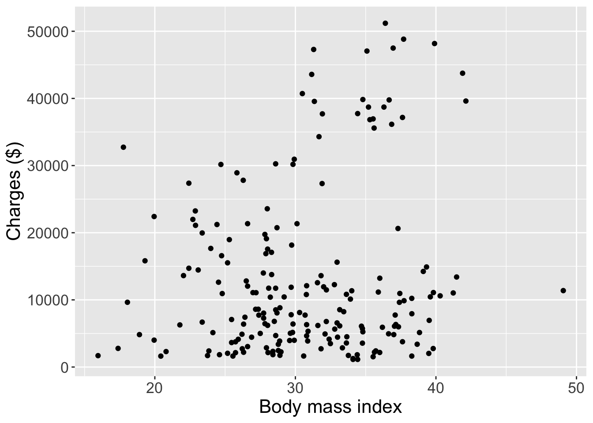
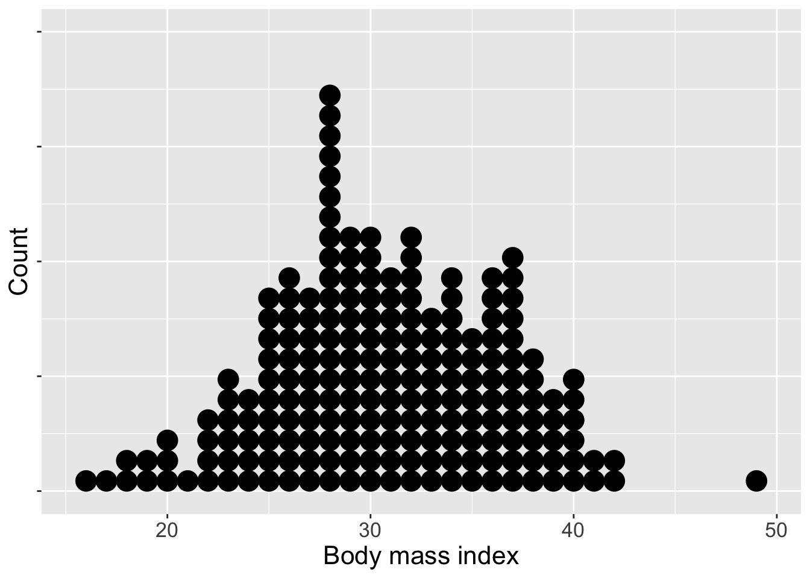
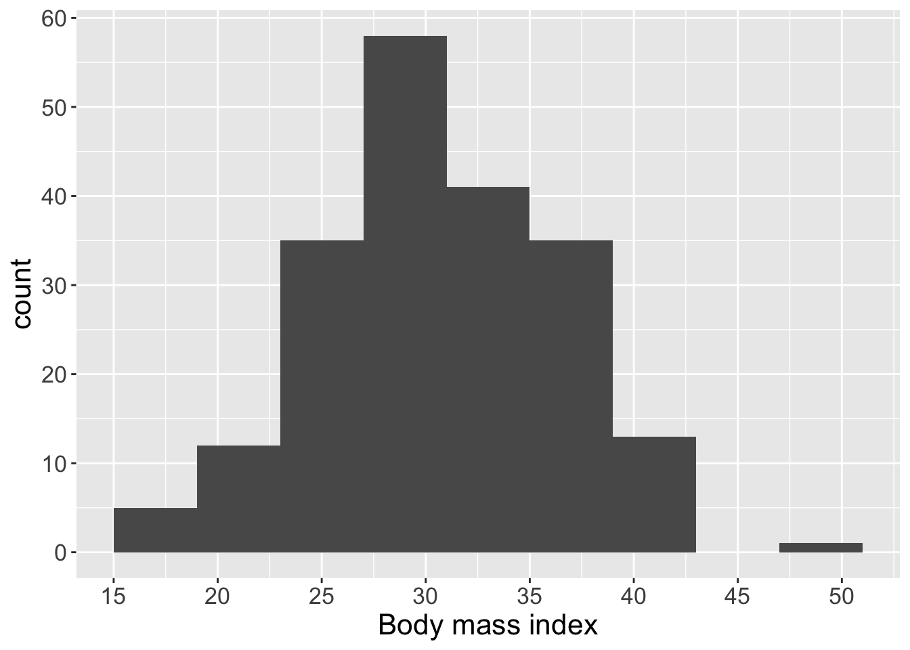
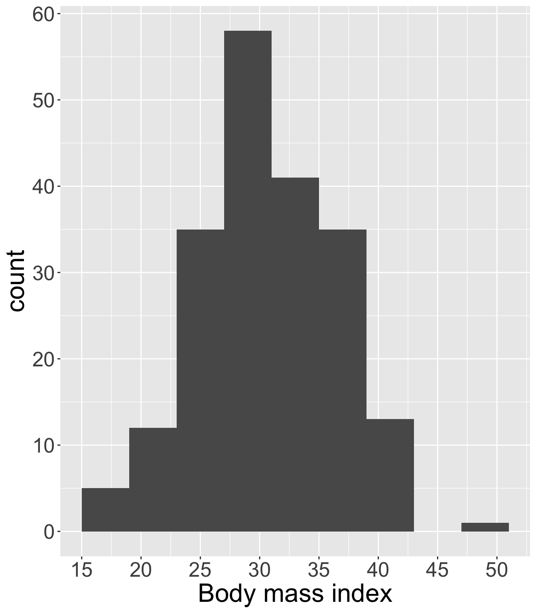
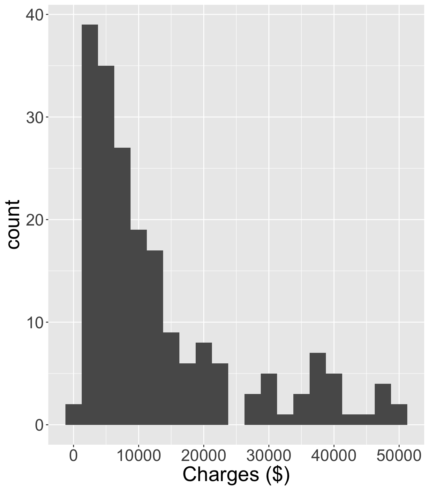
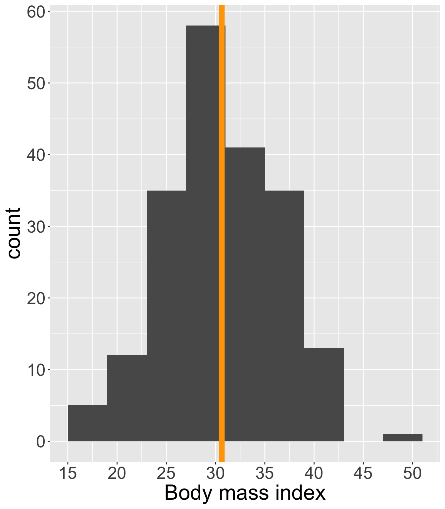
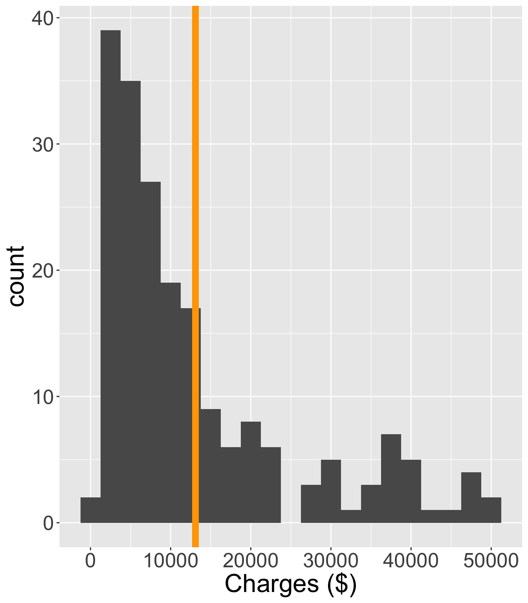
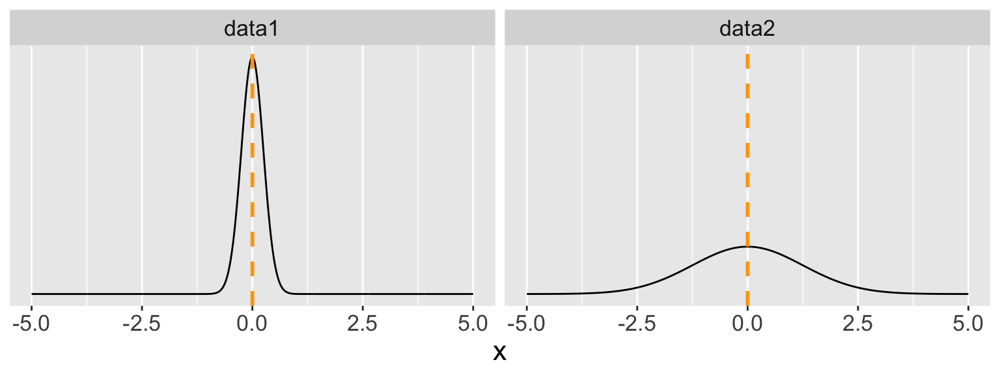

Numerical data
Visualization and summary statistics (part 1)
Housekeeping
Visualizing numerical data
We will be looking at some medical insurance data throughout these slides.
Rows: 1338 Columns: 7
── Column specification ────────────────────────────────────────────────────────
Delimiter: ","
chr (3): sex, smoker, region
dbl (4): age, bmi, children, charges
ℹ Use `spec()` to retrieve the full column specification for this data.
ℹ Specify the column types or set `show_col_types = FALSE` to quiet this message.Data
Which of the following variables are numerical?
Scatterplots
Scatterplots are bivariate visualizations that prove a case-by-case view of the data for two numerical variables
- Each point represents the observed pair of values of variables 1 and 2 for each case in the dataset

Live code
Base R
ggplot
Scatterplots (cont.)
How do we determine which variable to put on each axis?
What do scatterplots reveal about the data, and how are they useful?
How might we improve on this visualization?
Dot plots
Dot plots are a basic visualization that show the distribution of a single variable. They are univariate (one-variable) scatterplots.
In the following, we have a dot plot of
BMIrounded to the nearest integer.

Binning
- Dot plot display the exact value for each observation. Become hard to read when the variable of interest has a wide set of values
- We will sacrifice a bit of precision for convenience by binning: we will consider segmenting the variable into equal-sized bins and visualize the value of each observation using its corresponding bin
- For example, the
bmivariable has observed values of \(15.96\) through \(49.6\). Consider the following bins of size 5:- [14, 18), [18, 22), [22, 26), …, [48, 52)
- We tabulate/count up the number of observations that fall into each bin.
# A tibble: 8 × 2
bmi_bin count
<chr> <int>
1 [15, 19) 5
2 [19, 23) 12
3 [23, 27) 35
4 [27, 31) 58
5 [31, 35) 41
6 [35, 39) 35
7 [39, 43) 13
8 [49, 52) 1Histograms
Histograms are visualizations that display the binned counts as bars for each bin.

Histograms (cont.)
- Histograms provide a view of the density of the data; the values the data take on as well as how often
- Very helpful for understanding the shape of the data distribution
- Distributions are either symmetric or skewed in a one direction
- Distributions with long tails to the left are called left-skewed, whereas distributions with long tails to the right are right-skewed
- Also helpful for identifying modes which are prominent peaks in the distribution
- Distribution may be unimodal (one peak), bimodal (two peaks), or multimodal (more than two peaks)
- Peaks need not be same height in histogram
Histograms (cont.)
How would you describe the shape and modality in the following two histograms?


Summary statistics for numerical data
Visualizations are great for understanding the distribution of the data, but it can be extremely useful to obtain more specific, quantitative information about how the data behave.
Mean
By far the most common way to measure the center of the distribution of numerical data is using the mean, also called the average
We use the term sample mean when referring to the mean of observed/sampled data, which is typically denoted as \(\bar{x}\)
- \(x\) is a placeholder for the variable of interest (e.g.
BMI,charges) - The bar communicates that we are looking at the average
- \(x\) is a placeholder for the variable of interest (e.g.
The (sample) mean is the sum over all the values of the variable, divided by total number of observations \(n\):
\[\bar{x} = \frac{x_{1} + x_{2} + \ldots x_{n}}{n} = \frac{1}{n} \sum_{i=1}^{n} x_{i}\]
Mean (cont.)


The sample mean \(\bar{x}\) is an example of a sample statistic
The mean over the entire population is an example of a population parameter. The population mean is often denoted \(\mu\) (Greek letter mu)
The sample mean \(\bar{x}\) is often used as an estimate for \(\mu\)
Example
Suppose we have obtained the following data on diastolic blood pressure from patients at Porter Hospital:
\[ \boldsymbol{x} =76, 64, 62, 81, 70, 72, 81, 63, 67, 77 \]
Write out how you would calculate \(\bar{x}\)
Then we will use
Rto calculate the sample mean diastolic blood pressure!
Means depend on proportions
What is the average of the following values: \(1, 4, 4\)?
- \(\bar{x} = \frac{1+4+4}{3} = 1\left(\frac{1}{3} \right) + 4\left( \frac{2}{3}\right) = \frac{9}{3} = 3\)
If instead there were 10 1’s and 20 4’s, would the average be the same?
- Yes! \(\bar{x} = 1\left(\frac{10}{30}\right) + 4 \left(\frac{20}{30} \right) = \frac{90}{30} = 3\)
Variability
We learned that the mean is a way to describe the center or “average value” of a numerical variable
However, at the heart of statistics is also the variability or spread of the distribution of the variable
We will work with variance and standard deviation, which describe how spread out data are from their mean

Deviation
We return to the blood pressure data:
\[ \boldsymbol{x} = 76, 64, 62, 81, 70, 72, 81, 63, 67, 77 \qquad \qquad \qquad \bar{x} = 71.3 \]
We start with deviation, which is the distance of or difference between an observation from the (sample) mean
- How might we write this using statistical notation?
x deviation
1 76 4.7
2 64 -7.3
3 62 -9.3
4 81 9.7
5 70 -1.3
6 72 0.7
7 81 9.7
8 63 -8.3
9 67 -4.3
10 77 5.7Variance and standard deviation
The sample variance \(s^2\) squares the deviations and takes an average:
\[ s^2 = \frac{\sum_{i=1}^{n} (x_{i} - \bar{x})^2}{n-1} \]
- Let’s talk about this notation and intuition behind this formula. In particular, there are at least two things to note
The sample standard deviation \(s\) is simply the square root of the sample variance (\(s = \sqrt{s^2}\))
Calculate the sample variance and standard deviation for the blood pressure data
By hand
Using
R
Variance and standard deviation (cont.)
Like the mean, the population values for variance and standard deviation are denoted with Greek letters:
\(\sigma\) for population standard deviation (sigma)
\(\sigma^2\) for population variance
If the calculation of standard deviation is a more complicated quantity than the variance, why do we bother with standard deviation?